RECIPE COLLECTION
Appetizers
Shareable starters, dips, and small bites for gatherings and casual meals.
28 recipes
No matching recipes yet. Try another recipe name, ingredient, cuisine, or tag.

Appetizer
Buffalo Chicken Dip
Creamy, cheesy Buffalo chicken dip with tangy hot sauce, ranch, and tender shredded chicken.

Appetizer
Air Fryer French Fries
Crisp golden air fryer French fries with fluffy centers, light seasoning, and far less oil than deep-fried potatoes.

Appetizer
Air Fryer Mozzarella Sticks
Crunchy homemade air fryer mozzarella sticks with stretchy cheese centers and warm marinara for dipping.

Appetizer
Welsh Rarebit
A hot Welsh Rarebit topping of mature cheddar, mustard, butter, and ale or milk spooned over crisp buttered toast.

Appetizer
Scotch Eggs
Soft-cooked eggs wrapped in Italian sausage, breaded, and fried until crisp and golden.

Appetizer
Yorkshire Pudding
Tall, crisp Yorkshire puddings made from eggs, flour, milk, salt, and hot fat for a classic roast dinner side.

Pork
Sausage Rolls
Flaky Australian sausage rolls with a savoury pork-and-beef filling and crisp pastry.

Appetizer
Prawn Cocktail
Classic chilled prawn cocktail with crisp lettuce, lemon and a creamy pink seafood sauce.

Appetizer
Shrimp Cocktail
Classic American shrimp cocktail with chilled poached shrimp and a tangy homemade cocktail sauce.

Appetizer
Fairy Bread
A cheerful Australian party snack of buttered white bread covered in colourful sprinkles.

Appetizer
Finger-Shaped Cheese Sticks
Crisp cheese pastry sticks with almond nails and a herby finish, made for a playful Halloween snack board.
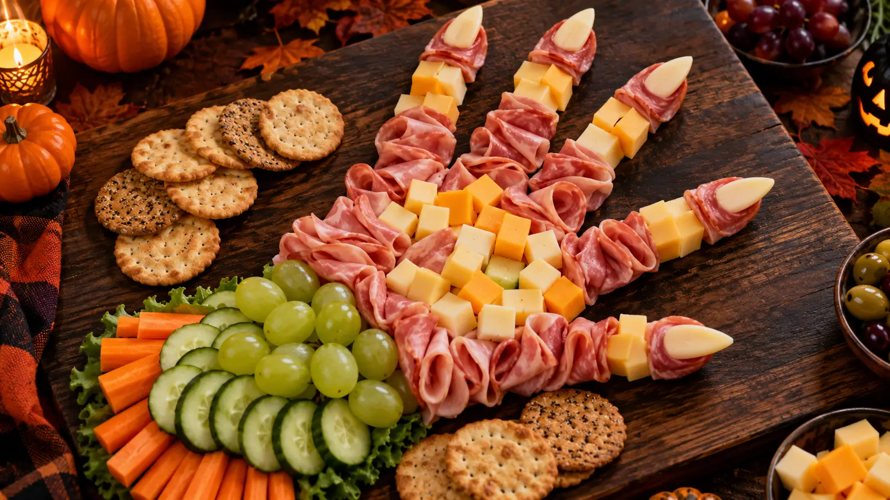
Appetizer
Monster Hand Ham and Cheese Board
An easy Halloween grazing board that turns ham, cheese, crackers and fresh produce into a friendly monster-hand display.
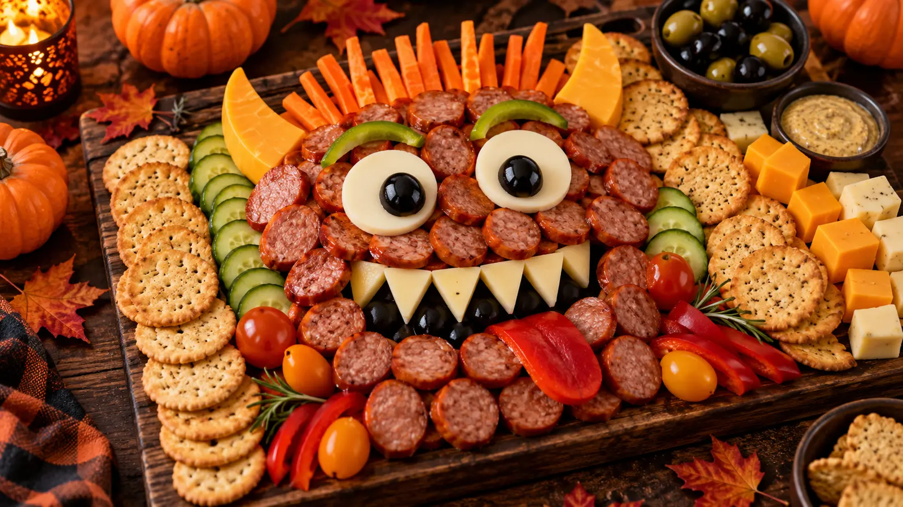
Appetizer
Sausage Monster Charcuterie Board
A playful Halloween charcuterie board with a sausage-and-cheese monster face, crisp crackers and fresh produce for contrast.

Appetizer
Wrapped Halloween Cheese Ball
A creamy herb cheese ball wrapped in cucumber ribbons for a fresh, playful Halloween party centrepiece.
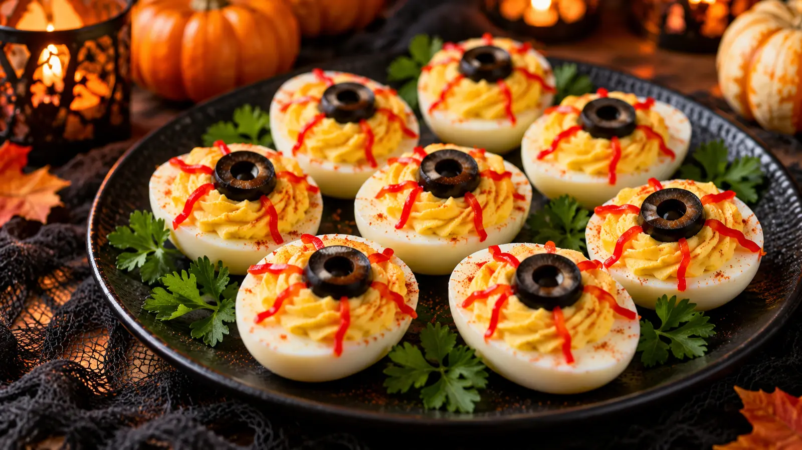
Appetizer
Creepy Deviled Egg Eyeballs
Classic deviled eggs dressed with olive pupils and fine pepper details for an easy Halloween platter.
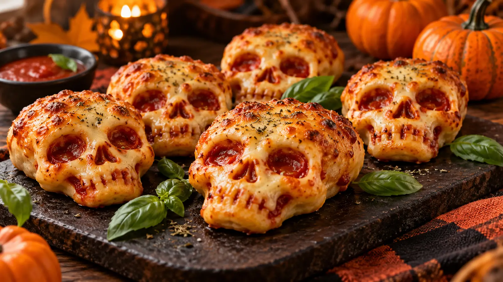
Appetizer
Pizza Skulls
Cheesy pizza pockets baked in skull molds for a crisp, shareable Halloween snack.
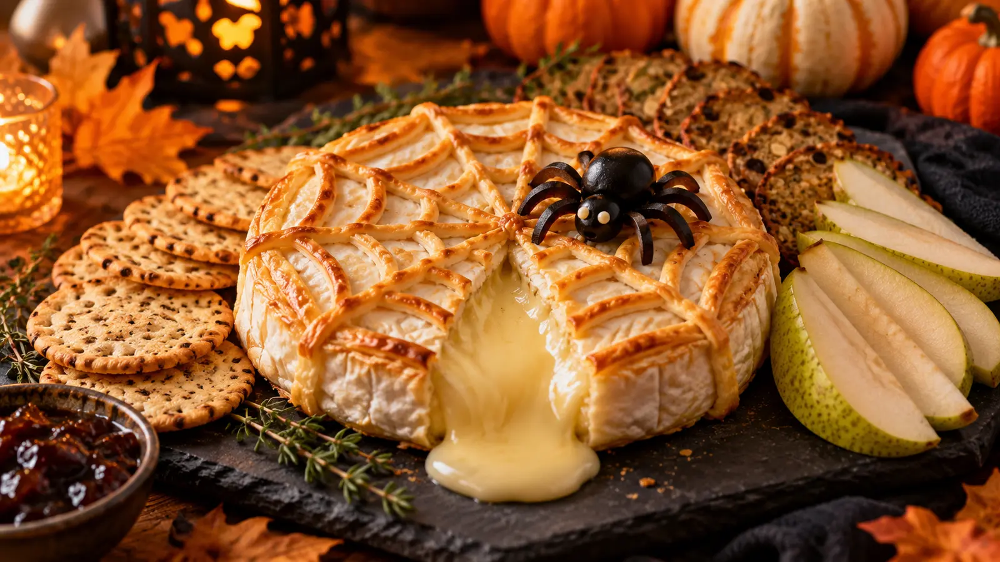
Appetizer
Spooky Baked Brie
Warm baked brie topped with a pastry spiderweb and olive spider for a simple Halloween starter.
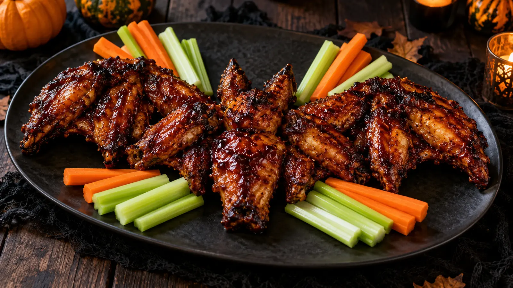
Appetizer
Black Bat Chicken Wings
Crisp oven wings glazed with a dark balsamic barbecue sauce and served with a bat-themed garnish.
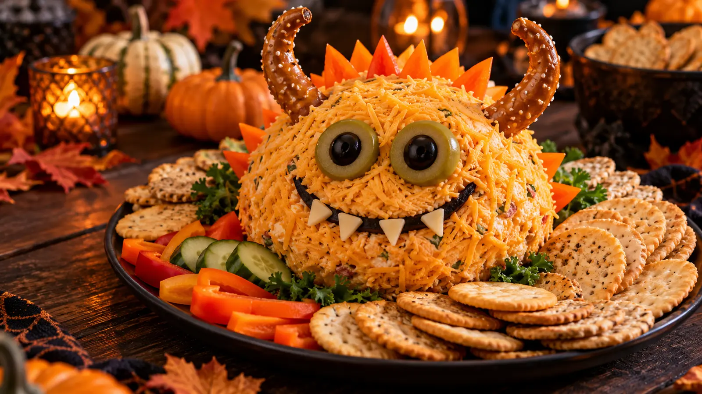
Appetizer
Monster Cheese Ball
A bright herb-and-cheddar cheese ball decorated with vegetable eyes for a cheerful Halloween snack table.
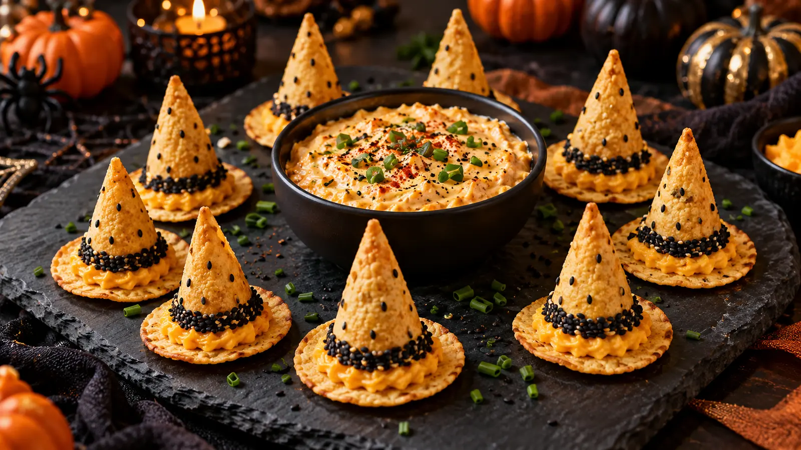
Appetizer
Witch Hat Dippers
Crisp tortilla cones with seasoned cream-cheese filling, shaped as savory witch hats for dipping.
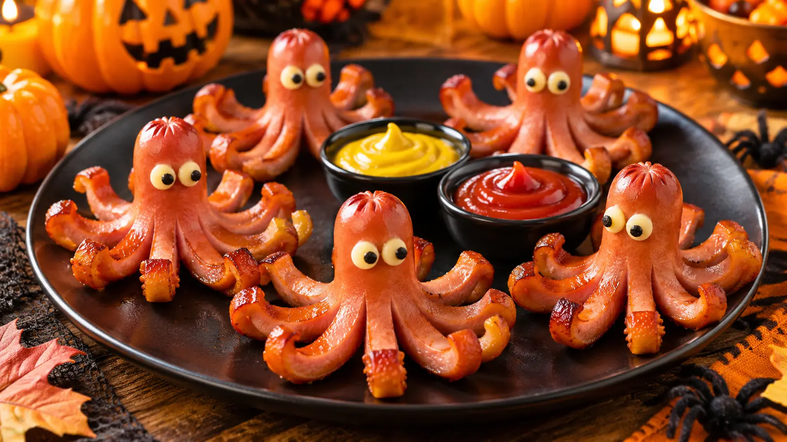
Appetizer
Octodogs
Hot dog octopuses with crisp curled legs, served with a simple mustard and ketchup dip.
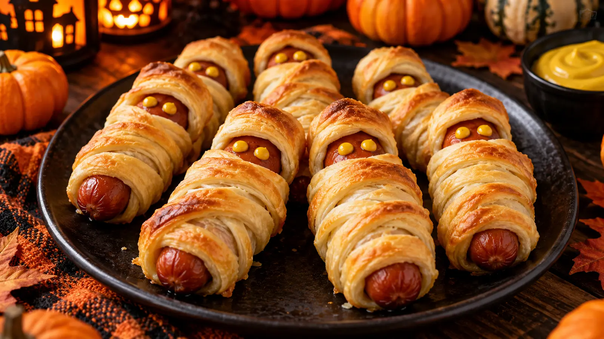
Appetizer
Hot Dog Mummies
Tender hot dogs wrapped in golden pastry strips with tiny mustard eyes for a quick Halloween tray.
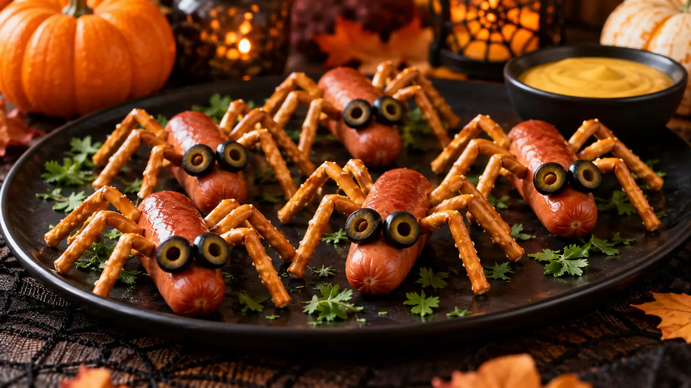
Appetizer
Spider Hot Dogs
Mini hot dog spiders with pretzel-stick legs, made for a quick kid-friendly Halloween platter.
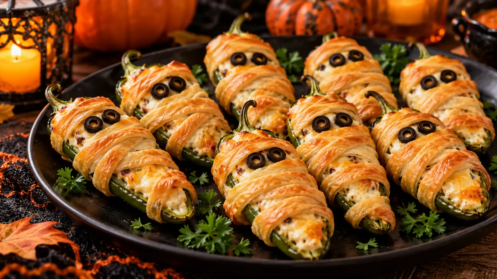
Appetizer
Baked Mummy Jalapeño Poppers
Cream-cheese jalapeño poppers wrapped in light pastry strips and baked until crisp.
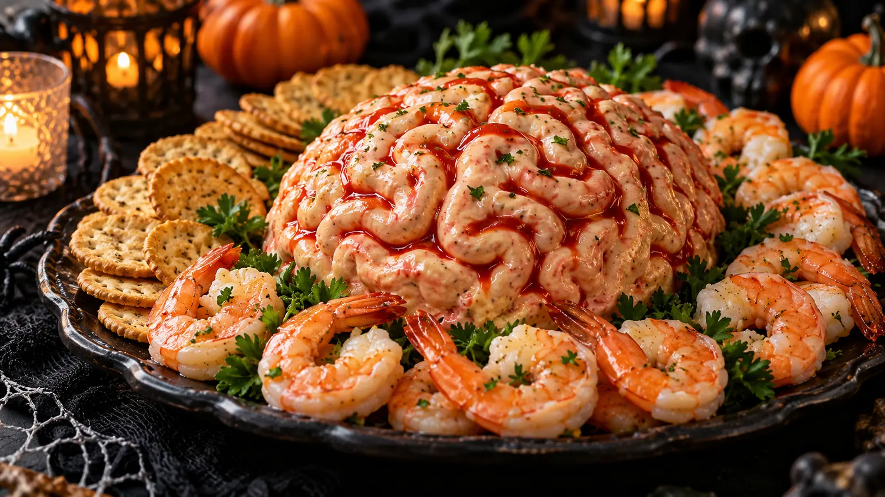
Appetizer
Shrimp Cocktail Brain Dip
A chilled shrimp cocktail dip piped into a playful brain-like swirl for a Halloween seafood starter.
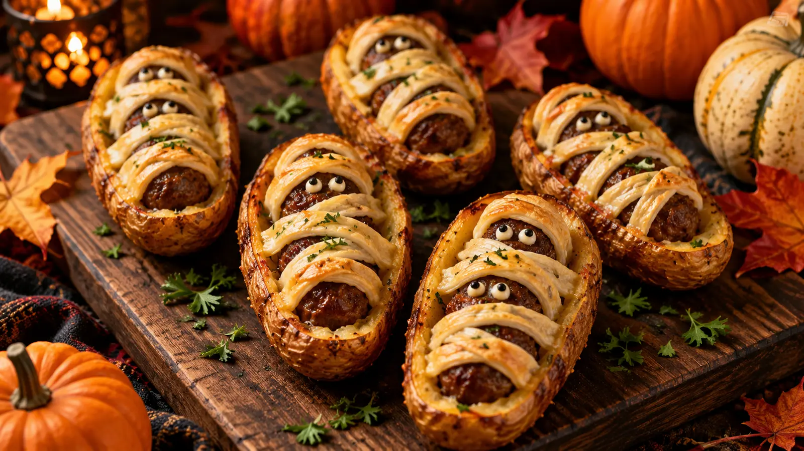
Appetizer
Mummified Meatballs in Potato Skin Coffins
Crisp potato-skin coffins holding saucy meatballs with cheese-strip mummy wraps.
Appetizer
Crescent Mummy Hot Dogs
Bite-size crescent-wrapped hot dogs with a crisp flaky finish for Halloween party snacking.
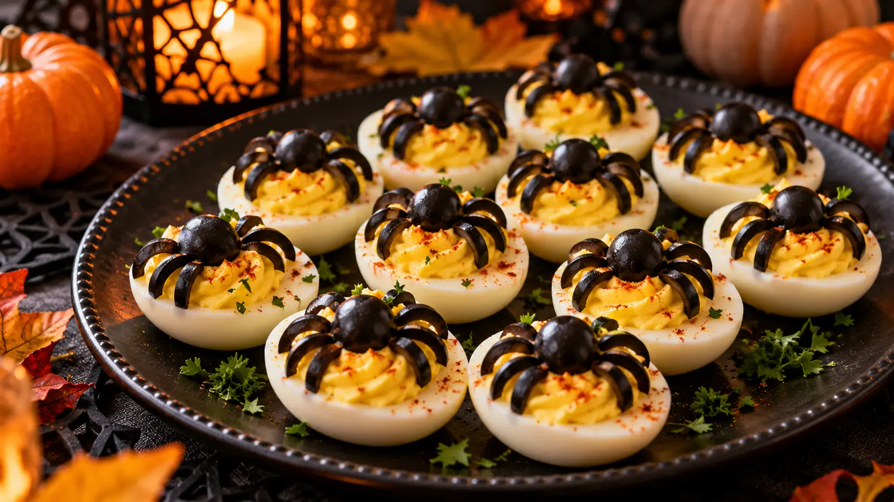
Appetizer
Spider Deviled Eggs
Creamy deviled eggs topped with olive spiders for a classic, protein-rich Halloween appetizer.